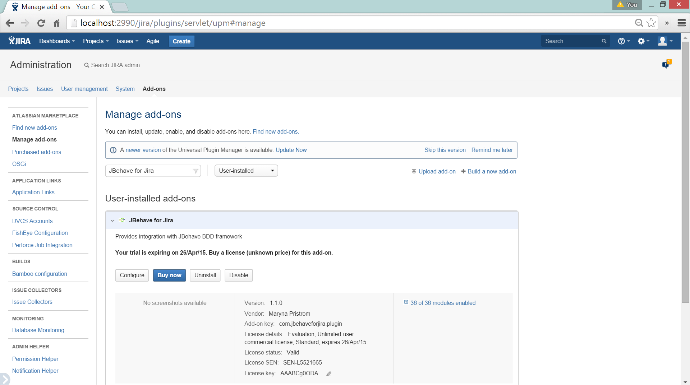

Overview
In order to be able to make use of the plugin you need to complete the following steps:
Step 1 - install the plugin
Step 2 - configure the plugin
Step 3 - install the plugin client
Step 4 - configure the plugin client
In order to be able to make use of the plugin you need to complete the following steps:
Step 1 - install the plugin
Step 2 - configure the plugin
Step 3 - install the plugin client
Step 4 - configure the plugin client
The plugin can be installed via the Jira's built in "Add-on Management" functionality
Step 1 - Navigate to "Add-ons" section from the administration menu and then click on "Find New Add-ons" from the menu on the left

Step 2 - In the search field type in 'JBehave for Jira' and then click on either "Buy Now" or "Free Trial" against the "Jbehave for Jira" plugin entry. Follow the prompts from then on to complete the installation.

Note: if you are running an older version of Jira that does not come with the built in plugin manager functionality then please contact us for an alternative way on how to install this plugin in your Jira instance.
Once you have installed the plugin you need to enable it for a specific Jira project or several projects via the plugin's administration page. Note - you will need to log in with an admin user account in order to access the plugin configuration screen.
Step 1 - Navigate to the "Manage Add-ons" page in the Administration area and then type "JBehave for Jira" in the search field.
Step 2 - Click on the Configure button to go to the plugin's configuration page.

Step 3 - Once on the plugin configuration screen, the menu on the left shows the different plugin settings that can be changed. The setting that controls for which Jira projects the plugin is enabled for is called 'ENABLED_PROJECTS', click on entry with this name. The current value of this setting is then loaded into the text are to the right. The value of this setting is an array of JIra project keys separated by comma. Just add the key of your Jira project to this array as shown in the example screenshot below and then click the Update button.

The plugin requires a Java client to work, which comes in the form of a Jar file that you need to have on your class path when running your JBehave tests. It can be downloaded using the link below.
For the plugin client to exchange information with the Jira plugin you need to update configuration of your JBehave Embedder (or test runner) so that for some of the JBehave framework components it uses implementations provided by the plugin library.
Note - an example project with all the required configuration changes can been downloaded via the following link - sample project
Step 1 - Use JiraStoryPathsFinder implementation to find story paths. If you are extending the usual JUnitStories class provided by JBehave framework then you need to simply override the storyPaths() method. See below for example.

Step 2 - Set JiraStoryLoader as the StoryLoader implementation. You need to se this on the configuration object that you use for your JBehave Embedder. See example below.

Step 3 - Set JiraStoryReporter as the StoryReporter implementation. You need to se this on the configuration object that you use for your JBehave Embedder. See example below.

Step 4 - Set JiraStepdocReporter as the StepDocReporter. You need to se this on the configuration object that you use for your JBehave Embedder. You also need to call the 'reportStepDocs' method, preferably in the try finally block. See example below.